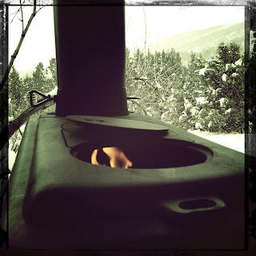

Recovered weblog entry
Stove on the porch

I have a cast-iron stove on the porch of our family's cabin, and from time to time, I like to head up there and watch the snow falling across the valley in a comfortable chair with a warm fire at my feet.
Lens: Roboto Glitter
Film: Cano Cafenol